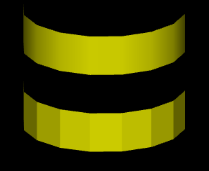
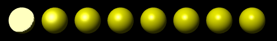

Section 09: Lighting and Materials
In this section, we look at OpenGL's version of material and light. Material refers to the properties of a surface that determine how light interacts with the surface. By default, OpenGL does not do any lighting calculations, but once lighting is enabled, it takes light and material properties into account when rendering objects. You can configure sources of light for your scene, and you can set the material properties of objects, and those settings are the inputs to the lighting calculations. OpenGL's lighting model is fairly crude, but it can add significant realism to a scene. We begin with some general discussion of light, material, and normal vectors, and then we will see how to configure it all in OpenGL.
About Light and Material
Before we look at the OpenGL approach to light and material, there are a few general ideas about the interaction of light and materials that you need to understand. When light strikes a surface, some of it will be reflected. Exactly how it reflects depends in a complicated way on the nature of the surface, what I am calling the material properties of the surface. In OpenGL (and in many other computer graphics systems), the complexity is approximated by two general types of reflection, specular reflection and diffuse reflection.
In perfect specular ("mirror-like") reflection, an incoming ray of light is reflected from the surface intact. The reflected ray makes the same angle with the surface as the incoming ray. A viewer can see the reflected ray only if the viewer is in the right position, somewhere along the path of the reflected ray. Even if the entire surface is illuminated by the light source, the viewer will only see the reflection of the light source at those points on the surface where the geometry is right. Such reflections are referred to as specular highlights. In practice, we think of a ray of light as being reflected not as a single perfect ray, but as a cone of light, which can be more or less narrow. Specular reflection from a very shiny surface produces very narrow cones of reflected light; specular highlights on such a material are small and sharp. A duller surface will produce wider cones of reflected light and bigger, fuzzier specular highlights. In OpenGL, the material property that determines the size and sharpness of specular highlights is called shininess.
In pure diffuse reflection, an incoming ray of light is scattered in all directions equally. A viewer would see reflected light from all points on the surface, and the surface would appear to be evenly illuminated.
When a light strikes a surface, some wavelengths of light can be absorbed, some can be reflected diffusely, and some can be reflected specularly. The degree to which a material reflects light of different wavelengths is what constitutes the color of the material. We now see that a material can have two different colors—a diffuse color that tells how the material reflects light diffusely and a specular color that tells how it reflects light specularly. The diffuse color is the basic color of the object. The specular color determines the color of specular highlights. The diffuse and specular colors can be the same; for example, this is often true for metallic surfaces. Or the can be different; for example, a plastic surface will ofthen have white specular highlights no matter what the diffuse color.
In fact, OpenGL goes even further. There are in fact four colors associated with a material. The third color is the ambient color of the material. Ambient light refers to a general level of illumination that does not come directly from a light source. It consists of light that has been reflected and re-reflected so many times that it is no longer coming from any particular source. Ambient light is why shadows are not absolutely black. In fact, ambient light is only a crude approximation for the reality of multiply reflected light, but it is better than ignoring multiple reflections entirely. The ambient color of a material determines how it will reflect various wavelengths of ambient light. Ambient color is generally set to be the same as the diffuse color.
The fourth color associated with a material is an emission color. The emission color is color that does not come from any external source, and therefore seems to be emitted by the material itself. This does not mean that the object is giving off light that will illuminate other objects, but it does mean that the object can be seen even if there is no source of light (not even ambient light). In the presence of light, the object will be brighter than can be accounted for by the light that illuminates it, and in that sense it appears to glow. The emission color is used only rarely.
All of these colors are specified in terms of red, green, blue, and alpha color components. Real light can contain an infinite number of components of different wavelengths. An RGB (red/green/blue) color is made up of just three components, but the nature of human color vision makes this a pretty good approximation for most purposes.
About Normal Vectors
The visual effect of a light shining on a surface depends on the properties of the surface and of the light. But it also depends to a great extent on the angle at which the light strikes the surface. That's why a curved, lit surface looks different at different points, even if its surface is a uniform color. To calculate this angle, OpenGL needs to know the direction in which the surface is facing. That direction is specified by a vector that is perpendicular to the surface. Another word for "perpendicular" is "normal," and a vector that is perpendicular to a surface at a given point is called a normal vector to that surface. When used in lighting calculations, a normal vector must have length equal to one. A normal vector of length one is called a unit normal. For proper lighting calculations in OpenGL, a unit normal must be specified for each vertex. But if you turn on the option GL_NORMALIZE by calling glEnable(GL_NORMALIZE), then you can specify normal vectors of any non-zero length, and OpenGL will convert them to unit normals for you. In fact, if your modelview transformation includes any scaling, you should always turn on GL_NORMALIZE, since scaling changes the length of normal vectors, and GL_NORMALIZE will rescale them to unit length after the transformation.
Just as OpenGL keeps track of a current drawing color, it keeps track of a current normal vector, which is part of the OpenGL state. When a vertex is generated, the value of the current normal vector is copied and is associated to that vertex as an attribute. The current normal vector can be set by calling glNormal3f(x,y,z) or glNormal3d(x,y,z). This can be done at any time, including between calls to glBegin and glEnd. This means that it's possible for different vertices of a polygon to have different associated normal vectors.
Now, you might be asking yourself, "Don't all the normal vectors to a polygon point in the same direction?" After all, a polygon is flat; the perpendicular direction to the polygon doesn't change from point to point. This is true, and if your objective is to display a polyhedral object whose sides are flat polygons, then in fact, all the normals of each of those polygons should point in the same direction. On the other hand, polyhedra are often used to approximate curved surfaces such as spheres. If your real objective is to make something that looks like a curved surface, then you want to use normal vectors that are perpendicular to the actual surface, not to the polyhedron that approximates it. Take a look at this example:

The two objects in this picture are made up of bands of rectangles. The two objects have exactly the same geometry, yet they look quite different. This is because different normal vectors are used in each case. For the top object, the band of rectangles is supposed to approximate a smooth surface. The vertices of the rectangles are points on that surface, and I really didn't want to see the rectangles at all—I wanted to see the curved surface, or at least a good approximation. So for the top object, when I specified a normal vector at one of the vertices, I used a vector that is perpendicular to the surface rather than one perpendicular to the rectangle. For the object on the bottom, on the other hand, I was thinking of an object that really is a band of rectangles, and I used normal vectors that were actually perpendicular to the rectangles. Here's a two-dimensional illustration that shows the normal vectors that were used for the two pictures:
The thick blue lines represent the rectangles. Imagine that you are looking at them edge-on. The arrows represent the normal vectors. Two normal vectors are shown for each rectangle, one on each end.
In the bottom half of this illustration, the vectors are actually perpendicular to the rectangles. There is an abrupt change in direction as you move from one rectangle to the next, so where one rectangle meets the next, the normal vectors to the two rectangles are different. The visual effect on the rendered image is an abrupt change in shading that is perceived as a corner or edge between the two rectangles.
In the top half, on the other hand, the vectors are perpendicular to a curved surface that passes through the endpoints of the rectangles. When two rectangles share a vertex, they also share the same normal at that vertex. Visually, this eliminates the abrupt change in shading, resulting in something that looks more like a smoothly curving surface.
The upshot of this is that in OpenGL, a normal vector at a vertex is whatever you say it is, and it does not have to be literally perpendicular to your polygons. The normal vector that you choose should depend on the object that you are trying to model.
There is one other issue in choosing normal vectors: There are always two possible unit normal vectors at a vertex, pointing in opposite directions. A polygon in 3D has two faces, facing in opposite directions. OpenGL considers one of these to be the front face and one of these to be the back face. OpenGL tells them apart by the order in which the vertices are specified. The default rule is that the order of the vertices is counterclockwise when looking at the front face and is clockwise when looking at the back face. When the polygon is drawn on the screen, this rule lets OpenGL tell whether it is the front face or the back face that is being shown. When specifying a normal vector for the polygon, the vector should point out of the front face of the polygon. This is another example of the right-hand rule. If you curl the fingers of your right hand in the direction in which the vertices of the polygon were specified, then the normal vector should point in the direction of your thumb. Note that when you are looking at the front face of a polygon, the normal vector should be pointing towards you. If you are looking at the back face, the normal vector should be pointing away from you.
It can be a difficult problem to come up with the correct normal vectors for an object. Complex geometric models often come with the necessary normal vectors included. This is true, for example, for the solid shapes drawn by the GLUT library.
Material in OpenGL
Material properties are set using the glMaterial* family of commands, principally glMaterialfv and glMateriali. (There are no versions of this command that take parameters of type double.) These commands set the current material properties; when a vertex is specified, the current material properties are copied and are associated with that vertex as attributes. In C, the functions take the form
void glMateriali(int face, int propertyName, int propertyValue) void glMaterialfv(int face, int propertyName, float *propertyValue)
The third parameter to glMaterialfv is a pointer, usually either an array or the address of an element of an array. In JOGL, the functions are methods in the class GL2. While glMateriali has the same form in JOGL as in C, the glMaterialfv method takes the form
public void glMaterialfv(int face, int propertyName, float[] propertyValue, int offset)
The third parameter is an array containing the data, and the extra fourth parameter is the index in the array where the data starts. In practice, offset is often zero. (We saw this pattern previously with commands such as glColor3fv.)
In all of these functions, the first parameter tells which face of a polygon the command applies to. It must be one of the constants GL_FRONT_AND_BACK, GL_FRONT or GL_BACK. This reflects the fact that different material properties can be assigned to the front and the back faces of polygons, since it is sometimes desirable for the front and the back faces to have a different appearance. When the face parameter is GL_FRONT_AND_BACK, the command sets the value of the material property for both sides simultaneously. The front material is also used for point and line primitives. Note that the back material is ignored completely unless two-sided lighting has been turned on; I will tell you how to do that later in this section.
The second parameter for glMaterial* is propertyName, which tells which material property is being set. For glMateriali, the only legal property name is GL_SHININESS, and the property value must be an integer in the range from 0 to 128, inclusive. This property determines the size and sharpness of specular highlights. Larger values produce smaller, sharper highlights. The default value is zero, which gives very large highlights that are almost never desirable. Try values close to 10 for a larger, fuzzier highlight and values of 100 or more for a small, sharp highlight.
For glMaterialfv, the propertyName parameter can be GL_AMBIENT, GL_DIFFUSE, GL_AMBIENT_AND_DIFFUSE, GL_SPECULAR, or GL_EMISSION. The names refer to the four different types of material color supported by OpenGL, as discussed above. The property name GL_AMBIENT_AND_DIFFUSE allows both the ambient and the diffuse material colors to be set simultaneously to the same value. For glMatrialfv, the third parameter is an array of four numbers of type float giving the four color components of the material color that is being set. The values are ordinarily in the range 0.0 to 1.0. (The alpha component is ignored completely by default and is ignored in all cases except for the alpha component of the diffuse color.)
In the case of the red, blue, and green components of the ambient, diffuse, or specular color, the term "color" really means reflectivity. That is, the red component of a color gives the proportion of red light hitting the surface that is reflected by that surface, and similarly for green and blue. There are three different types of reflective color because there are three different types of light in OpenGL, and a material can have a different reflectivity for each type of light. (More about that in the next subsection.)
The default material has ambient color (0.2,0.2,0.2,1) and diffuse color (0.8,0.8,0.8,1). Specular and emission color are both black, that is, (0,0,0,1). It's not surprising that materials, by default, do not emit extra color. However, it is a little surprising that materials, by default, have no specular reflection. This means that the objects by default have no specular highlights. Here are some pictures that do have such highlights:

This image shows eight spheres that differ only in the value of the GL_SHININESS material property. The ambient and diffuse material colors are set to (0.75,0.75,0,1), for a general yellow appearance. The specular color is (0.75,0.75,0.75,1), which adds some blue to the specular highlight, making it appear whiter as well as brighter than the rest of the sphere. For the sphere on the left, the shininess is 0, which leads to an ugly specular "highlight" that covers an entire hemisphere. Going from left to right, the shininess increases by 16 from one sphere to the next. The material colors for this image could be specified in C by:
float spec[4] = { 0.75, 0.75, 0.75, 1 };
float diff[4] = { 0.75, 0.75, 0, 1 };
glMaterial(GL_FRONT_AND_BACK, GL_SPECULAR, spec);
glMaterial(GL_FRONT_AND_BACK, GL_AMBIENT_AND_DIFFUSE, diff);
or for JOGL by
gl.glMaterialfv(GL2.GL_FRONT_AND_BACK, GL2.GL_SPECULAR,
new float[] { 0.75f, 0.75f, 0.75f, 1 }, 0);
gl.glMaterialfv(GL2.GL_FRONT_AND_BACK, GL2.GL_AMBIENT_AND_DIFFUSE,
new float[] { 0.75f, 0.75f, 0, 1 }, 0);
The shininess for sphere number i could be set in C using
glMateriali(GL_FRONT_AND_BACK, GL_SHININESS, i*16);
where i varies from 0 to 8 for the eight spheres. The JOGL version is similar.
Materials are used in lighting calculations and are ignored when lighting is not enabled. Similarly, the current color as set by glColor* is ignored, by default, when lighting is enabled. However, as we have seen, calling glEnable(GL_COLOR_MATERIAL) will cause OpenGL to take the current color into account even while lighting is enabled.
More specifically, enabling GL_COLOR_MATERIAL tells OpenGL to substitute the current color for the ambient and for the diffuse material color when doing lighting computations. The specular and emission material colors are not affected. (This is by default. You can choose which material color should be tied to the current color using the function glMaterialColor, which you can look up if you are interested.)
Light in OpenGL
Our 3D worlds so far have been illuminated by just one light: a white light shining from the direction of the viewer onto the scene. You get this light just by turning on lighting with glEnable(GL_LIGHTING) and enabling light number zero with glEnable(GL_LIGHT0). This "viewpoint light" shines on everything that the viewer can see, and it is sufficient for some purposes. However, in OpenGL, it is possible to define multiple lights. They can shine from different directions and can have various colors. Every OpenGL implementation is required to support at least eight lights, which are identified by the constants GL_LIGHT0, GL_LIGHT1, ..., GL_LIGHT7. (These constants are consecutive integers.) Each light can be separately enabled and disabled; they are all off by default. Only the lights that are enabled while a vertex is being rendered can have any effect on that vertex.
Light number zero, as we have seen, is white by default. All the other lights, however, are black. That is, they provide no illumination at all even if they are enabled. The color and other properties of a light can be set with the glLight* family of commands. The function glLightfv is the most common one in this family and is the only one that I will discuss. In the C API, this function takes the form
void glLightfv(int light, int propName, float* propValue)
where the last parameter is generally an array. I will only discuss using this function in C. For JOGL, just as with glMaterialfv, there are four parameters, the third being an array and the fourth an index into the array.
The first parameter, light, specifies the light whose property is being set. It should be one of the constants GL_LIGHT0, GL_LIGHT1, and so on. The second parameter, propName, specifies which property of the light is being set. Commonly used properties are GL_POSITION, GL_AMBIENT, GL_DIFFUSE, and GL_SPECULAR, and these are the only ones I will discuss. The third parameter of glLightfv is a pointer to the new value for the property, usually given as an array or the address of an array element.
A light can have color. In fact, each light in OpenGL has an ambient, a diffuse, and a specular color, which are set using glLightfv with property names GL_AMBIENT, GL_DIFFUSE, and GL_SPECULAR respectively. Just as the color of a material is more properly referred to as reflectivity, color of a light is more properly referred to as intensity or energy. A light color in OpenGL is specified by four numbers giving the red, green, blue, and alpha intensity values for the light. These values are often between 0 and 1 but are not clamped to that range. (An alpha component of 1 should be included but is not, as far as I know, used.)
The diffuse intensity of a light is the aspect of the light that interacts with diffuse material color, and the specular intensity of a light is what interacts with specular material color. It is common for the diffuse and specular light intensities to be the same. For example, we could make a dim, somewhat blue light with
float bluish[4] = { 0.3, 0.3, 0.7, 1 };
glLightfv(GL_LIGHT1, GL_DIFFUSE, bluish);
glLightfv(GL_LIGHT1, GL_SPECULAR, bluish);
The ambient intensity of a light works a little differently. Recall that ambient light is light that is not directly traceable to any light source. Still, it has to come from somewhere and we can imagine that turning on a light should increase the general level of ambient light in the environment. The ambient intensity of a light in OpenGL is added to the general level of ambient light. This ambient light interacts with the ambient color of a material, and this interaction has no dependence on the position of any light source. So, a light doesn't have to shine on an object for the object's ambient color to be affected by the light source; the light source just has to be turned on. Since ambient light should never be too intense, the ambient intensity of a light source should always be rather small. For example, we might want our blue light to add a slight bluish tint to the ambient light. We could do this by saying
float aLittleBlue[4] = { 0, 0, 0.1, 0 };
glLightfv(GL_LIGHT1, GL_AMBIENT, aLittleBlue);
I should emphasize again that this is all just an approximation, and in this case not one that has a basis in the physics of the real world. Real light sources do not have separate ambient, diffuse, and specular colors.
The other major property of a light is its position. There are two types of lights, positional and directional. A positional light represents a light source at some point in 3D space. Light is emitted from that point in all directions. A directional light, on the other hand, shines in parallel rays from some set direction. A directional light imitates light from the sun, whose rays are essentially parallel by the time they reach the earth.
The type and position or direction of a light are set using glLightfv with property name equal to GL_POSITION. The property value is an array of four numbers (x,y,z,w), of which at least one must be non-zero. When the fourth number, w, is zero, then the light is directional and the point (x,y,z) specifies the direction of the light: The light rays shine in the direction of the line from the point (x,y,z) towards the origin. This is related to homogeneous coordinates: The source of the light can be considered to be a point at infinity in the direction of (x,y,z). On the other hand, if the fourth number, w, is 1, then the light is positional and is located at the point (x,y,z). Again, this is really homogeneous coordinates: Any non-zero value for w specifies a positional light at the point (x/w,y/w,z/w). The default position for all lights is (0,0,1,0), representing a directional light shining from the positive direction of the z-axis and so towards the negative direction of the z-axis.
The position specified for a light is transformed by the modelview matrix that is in effect at the time the position is set using glLightfv. Thus, lights are treated in the same way as other objects in OpenGL in that they are subject to the same modelview transformation. For example, setting the position of light number 1 with
float position[4] = { 1,2,3,1 }
glLightfv(GL_LIGHT1, GL_POSITION, position);
puts the light in the same place as
float position[4] = { 0,0,0,1 }
glTranslatef(1,2,3);
glLightfv(GL_LIGHT1, GL_POSITION, position);
As another example, suppose that you are using the camera utility that was described in the previous section. If a light position is set just after applying the camera in the display function, then that light will be at a fixed in position in the scene, even as the camera view is changed, instead of being attached to the viewer. In this case, the light position is set when the modelview transform contains just the viewing transformation, and the result is that the light is fixed with respect to the world rather than with respect to the viewer.
Note that the default light position for GL_LIGHT0 is, in effect, set before any transformation has been applied and is therefore given directly in eye coordinates. That is, when we say that the default light shines towards the negative direction of the z-axis, we mean the z-axis in eye coordinates, in which the viewer is at the origin, looking along the negative z-axis. So, the default position makes a light into a viewpoint light that shines in the direction the viewer is looking.
There are a few properties of the OpenGL lighting system that are "global" in the sense that they are not properties of individual lights. These properties can be set using the glLightModeli and glLightModelfv functions. I will mention just two of these properties. Again, I will use the C API and note that there is the usual extra parameter in the JOGL version of glLightModelfv. In C, both functions have two parameters. The first is the name of the global light property that is being set, and the second is the new value.
The function glLightModelfv, can be used to set the global ambient light intensity, which has the property name GL_LIGHT_MODEL_AMBIENT. Global ambient light is ambient light that is present in the environment even when no light sources are turned on. The default value is (0.2,0.2,0.2,1). For a yellowish ambient light, for example, you could say
float yellowish[4] = { 0.2, 0.2, 0, 1 };
glLightModelfv(GL_LIGHT_MODEL_AMBIENT, yellowish);
The one property that you will want to set using glLightModeli is GL_LIGHT_MODEL_TWO_SIDE. This determines whether OpenGL treats front and back faces of polygons differently. If you turn on two sided lighting, you can have different material properties for the front and back faces. You can, for example, make them different colors. Perhaps more important, when two-sided lighting is turned on, OpenGL creates normal vectors for the back face of a polygon by reversing the normal vector of the front face. Without two sided lighting, back faces will not be properly lit. The command
gl.glLightModeli(GL_LIGHT_MODEL_TWO_SIDE, GL_TRUE);
turns on two-sided lighting. The second parameter can be GL_TRUE or GL_FALSE, but these are actually just symbolic constants for the numbers 1 and 0.
Putting Lights into the World
So far, we have seen two ways of using lights. A "view light" moves with the viewer and is implemented by setting the light position before setting up the viewing transformation, while the modelview matrix is still equal to the identity. The position of this type of light is set in the eye coordinate system. A "world light" is fixed with respect to the world rather than the viewer and is implemented by setting the light position just after setting after the viewing transformation. The position of this type of light is set in the world coordinate system.
Sometimes, however, you want to treat lights just like other objects, with a position set in object coordinates and subject to a modeling transformation. Suppose that a world includes a model of a lamp. The lamp model would include some geometry, but if it is going to cast light on other objects in the scene, it also has to include a source of light. This means that the lamp is a complex object made up of an OpenGL light plus some geometric objects. Any modeling transformation that is applied to the lamp should affect the light as well as the geometry. In terms of the scene graph, the light is represented by a node in the graph, and it is affected by modeling transformations in the same way as other objects in the scene graph. You can even have animated lights or animated objects that include lights as subobjects, like the headlights on a car.
But there is a problem: Before any piece of geometry is rendered, all the light sources that might affect that geometry must already be configured and enabled. This means that you can't simply set up light sources in the scene graph as you traverse the graph in the usual way. If you do that, objects that are drawn before the light is encountered won't be properly illuminated by the light. We encountered a similar problem in the previous section when trying to put a viewer/avatar into the scene graph.
One solution is to do two traversals of the scene graph, the first to set up the lights and the second to draw the geometry. Since lights are affected by the modelview transformation, you have to set up the modeling transform during the first traversal in exactly the same way that you do in the second traversal. When you encounter the lights during the first traversal, you need to set the position of the light, since setting the position is what triggers the application of the current modelview transformation to the light. You also need to set any other properties of the light that might have changed since the previous time that the scene was drawn. During the second traversal, when geometry is being rendered, light nodes in the scene graph can be ignored.
The Lighting Equation
What does it actually mean to say that OpenGL performs "lighting calculations"? The goal of the calculation is produce a color, (r,g,b,a), for a vertex. The alpha component, a, is easy: It's simply the alpha component of the diffuse material color at that vertex. I should note that OpenGL does lighting calculations only at vertices, and the results for the vertices of a primitive are blended to get the color of each interior point. The calculations of r, g, and b are fairly complex and rather mathematical, and you don't necessarily need to understand them. But here is a short description of how it's done...
Ignoring alpha components, let's assume that the ambient, diffuse, specular, and emission colors of the material have RGB components (mar,mag,mab), (mdr,mdg,mdb), (msr,msg,msb), and (mer,meg,meb), respectively. Suppose that the global ambient intensity is (gar,gag,gab). Then the red component of the vertex color will be
r = mer + gar*mar + I0r + I1r + I2r + ...
where Iir is the contribution to the color that comes from the i-th light. A similar equation holds for the green and blue components of the color. This equation says that the emission color is simply added to any other contributions to the color. And the contribution of global ambient light is obtained by multiplying the global ambient intensity by the material ambient color. This is the mathematical way of saying that the material ambient color is the proportion of the ambient light that is reflected by the surface.
The terms I0r, I1r, and so on, represent the contribution to the final color from the from the light sources GL_LIGHT0, GL_LIGHT1, and so on. The contributions from the light sources are complicated. Note first of all that if a light source is disabled, then the contribution from that light source is zero. For an enabled light source, we have to look at the geometry as well as the colors:

In this illustration, N is the normal vector at the point whose color we want to compute. L is a vector that points towards the light source, and V is a vector that points towards the viewer. (Both the viewer and the light source can be "at infinity", but the direction is still well-defined.) R is the direction of the reflected ray, that is, the direction in which a light ray from the source will be reflected when it strikes the surface at the point in question. The angle between N and L is the same as the angle between N and R. All of the vectors are unit vectors, with length 1. Recall that for unit vectors A and B, the inner product A · B is equal to the cosine of the angle between the two vectors. Inner products occur at several points in the lighting equation, as the way of accounting for the angles between various vectors.
Now, let's say that the light has ambient, diffuse, and specular color components (lar,lag,lab), (ldr,ldg,ldb), and (lsr,lsg,lsb). Also, let mh be the value of the shininess property (GL_SHININESS) of the material. Then, assuming that the light is enabled, the contribution of this light source to the red component of the vertex color can be computed as
Ir = lar*mar + f*( ldr*mdr*(L·N) + lsr*msr*max(0,V·R)mh )
with similar equations for the green and blue components. Here, f is 0 if the surface is facing away from the light and is 1 otherwise, and f is 1 when L·N is greater than 0, that is, when the angle between L and N is less than 90 degrees. When f is zero, there is no diffuse or specular contribution from the light to the color of the vertex. Note that even when f is 0, the ambient component of the light can still affect the vertex color.
(I am leaving out some factors here. The equation as presented doesn't take into account the fact that the effect of a positional light can depend on the distance to the light, and it doesn't take into account spotlights, which emit just a cone of light. Both of these can configured in OpenGL, but I haven't told you how to do so.)
The diffuse component of the color, before adjustment by f, is given by ldr*mdr*(L·N) This represents the diffuse intensity of the light times the diffuse reflectivity of the material, multiplied by the cosine of the angle between L and N. The angle is involved because for a larger angle, the same amount of energy from the light is spread out over a greater area:
As the angle increases from 0 to 90 degrees, the cosine of the angle decreases from 1 to 0, so the larger the angle, the smaller the diffuse color contribution. The specular component, lsr*msr*max(0,V·R)mh, is similar, but here the angle involved is the angle between the reflected ray and the viewer, and the cosine of this angle is raised to the exponent mh. The exponent is the material's shininess property. When this property is 0, there is no dependence on the angle (as long as the angle is greater than 0), and the result is the sort of huge and undesirable specular highlight that we have seen for that value of shininess. For positive values of shininess, the specular contribution is maximal when this angle is zero and it decreases as the angle increases. The larger the shininess value, the faster the rate of decrease. The result is that larger shininess values give smaller, sharper specular highlights.
Remember that the same calculation is repeated for every enabled light and that the results are combined to give the final vertex color. It's easy, especially when using several lights, to end up with color components larger than one. In the end, before the color is used to color a pixel on the screen, the color components must be clamped to the range zero to one. Values greater than one are replaced by one. This makes it easy, when using a lot of light, to produce ugly pictures in which large areas are a uniform white because all the color values in those areas exceeded one. All the information that was supposed to be conveyed by the lighting has been lost. The effect is similar to an over-exposed photograph. It can take some work to find appropriate lighting levels to avoid this kind of over-exposure.